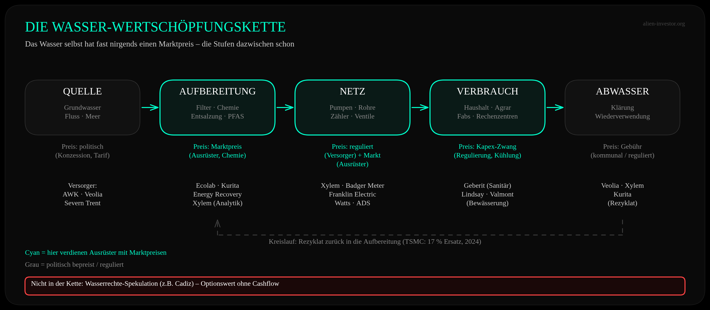
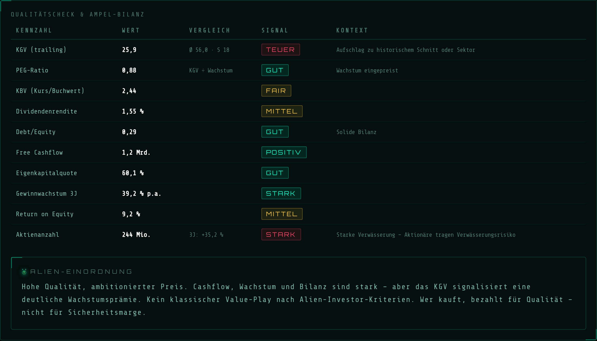
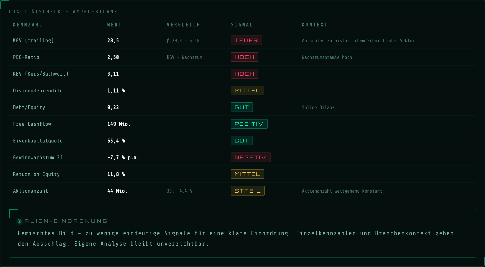
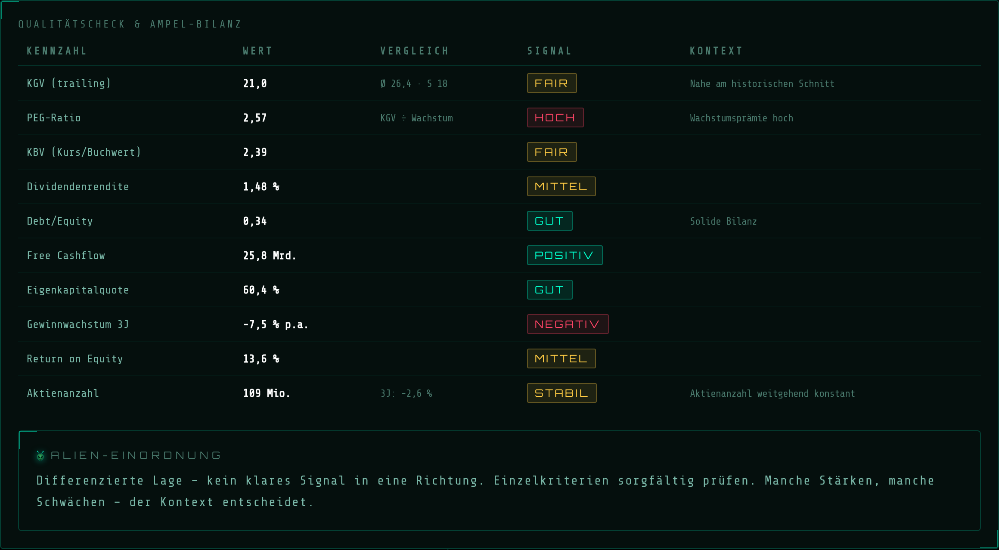
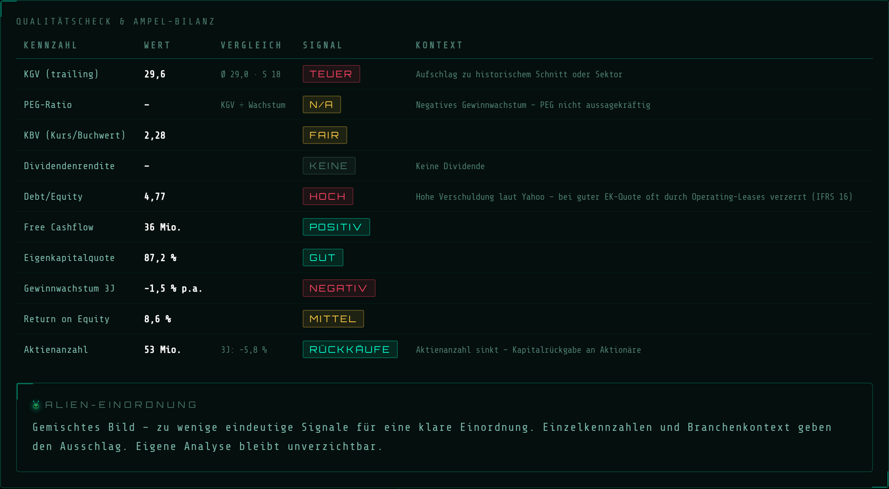
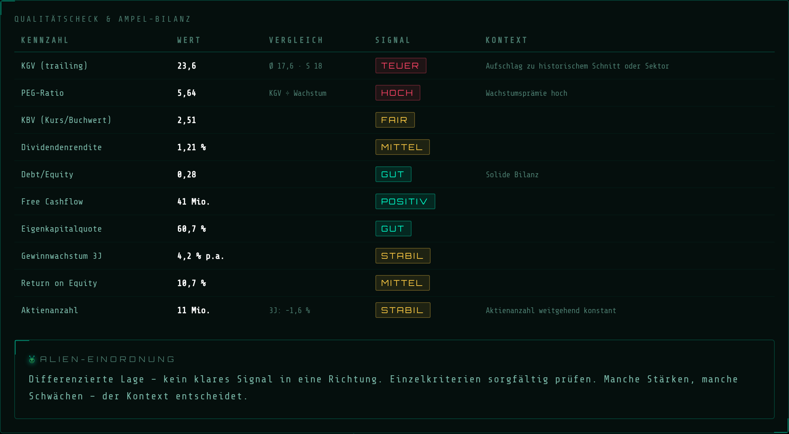
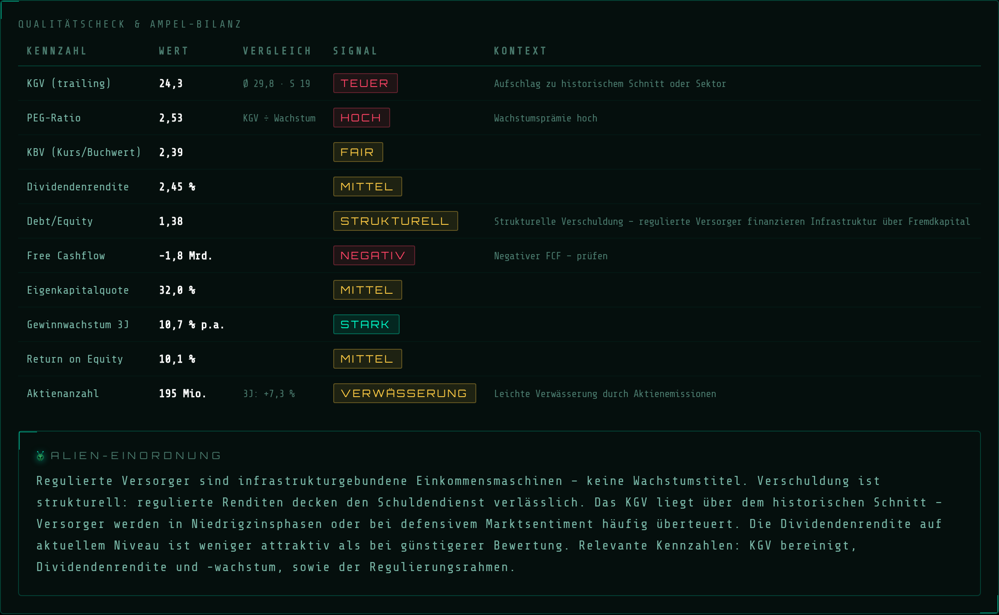
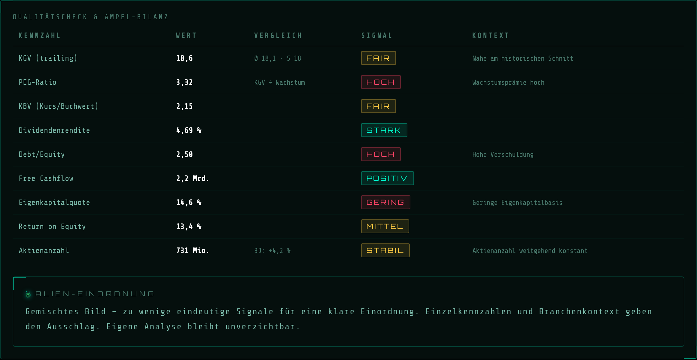
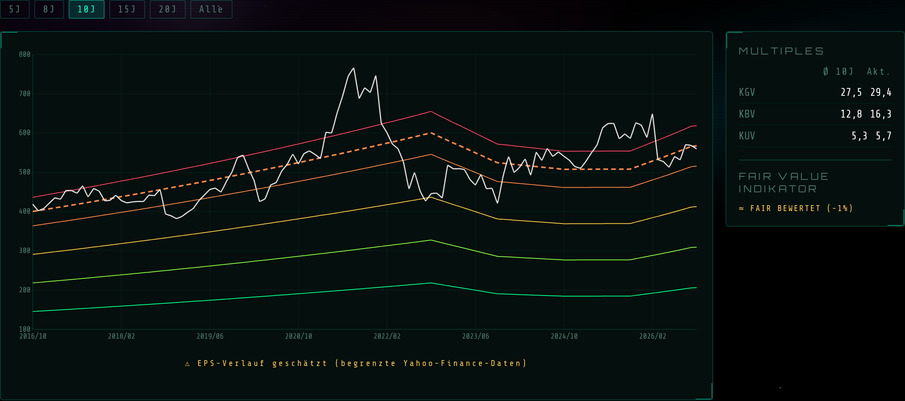
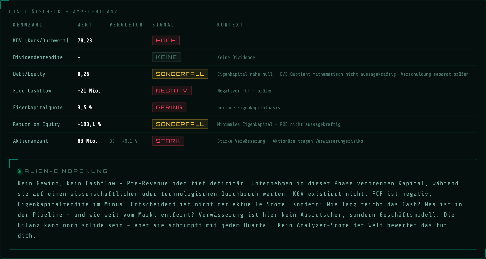

„Wasser ist das neue Öl." Der Satz steht auf ETF-Prospekten, in Nachhaltigkeitsberichten und in jedem zweiten Megatrend-Report. Für den einen ist Wasserknappheit die größte Investmentchance des Jahrhunderts, für den anderen ein weiteres grün angestrichenes Verkaufsargument, mit dem Fondsgesellschaften 0,65 Prozent Gebühr pro Jahr rechtfertigen. Beide Seiten reden aneinander vorbei, weil sie zwei Dinge vermischen: die Physik des Wassers und die Politik des Wasserpreises.
Diese Analyse trennt beides. Erst die messbaren Fakten, dann die Frage, wer daran überhaupt verdienen kann. Danach acht Unternehmen im Alien Analyzer, ein Blick in den größten Wasser-ETF Europas und eine Liste dessen, was man besser meidet. Mit dem Blick des langfristigen Mit-Eigentümers, nicht des Trend-Surfers.
„Wasser wird nicht verschifft wie Öl und nicht gehandelt wie Kupfer. Wer Wasserknappheit kaufen will, kauft in Wahrheit Pumpen, Membranen und Zähler. Der Rest ist Politik."
Die Knappheit ist real, aber regional; der Wasserpreis ist fast überall politisch; verdient wird deshalb nicht am Wasser, sondern an den Stufen dazwischen: bei den Ausrüstern, die Pumpen, Zähler, Membranen und Reinstwasseranlagen liefern. Versorger sind Anleihe-Ersatz, Mischkonzerne tragen ein Etikett, und Wasserrechte sind Spekulation.
Zuerst das, was sich messen lässt. Das World Resources Institute (WRI) wertet mit seinem Aqueduct-Atlas aus, wie viel des verfügbaren Süßwassers ein Land jedes Jahr verbraucht. Ergebnis der Auswertung von 2023: 25 Länder, in denen ein Viertel der Weltbevölkerung lebt, nutzen mindestens 80 Prozent ihres verfügbaren Angebots. Das ist die Definition von „extrem hohem Wasserstress". Rund vier Milliarden Menschen, also mindestens die Hälfte der Weltbevölkerung, erleben mindestens einen Monat pro Jahr solche Bedingungen. Der globale Wasserbedarf hat sich seit 1960 mehr als verdoppelt und soll bis 2050 um weitere 20 bis 25 Prozent steigen.
Der entscheidende Punkt steckt aber in der Verteilung: Im Nahen Osten und Nordafrika leben 83 Prozent der Bevölkerung unter extrem hohem Stress, in Südasien 74 Prozent. In Mitteleuropa, Skandinavien oder Kanada liegt der Wert nahe null. Wasser ist kein globaler Rohstoff wie Öl, das in Tankern um die Welt fährt und in Rotterdam denselben Preis hat wie in Singapur. Wasser ist schwer, billig pro Liter und lässt sich nicht wirtschaftlich über Kontinente transportieren. Knappheit ist deshalb immer lokal: ein Flusssystem, ein Aquifer, eine Region.
Der stille Teil: Grundwasser. Die größte Studie zu diesem Thema (Jasechko et al., Nature, Januar 2024) hat rund 170.000 Messbrunnen in 1.693 Aquifersystemen in über 40 Ländern ausgewertet. In 36 Prozent der Aquifere sinken die Pegel um mehr als zehn Zentimeter pro Jahr, und in 30 Prozent beschleunigt sich der Rückgang im 21. Jahrhundert, mehr als doppelt so oft, wie es der Zufall erwarten ließe. Aber: In 16 Prozent der Systeme hat sich der Trend der 1980er und 1990er Jahre umgekehrt. Tucson in Arizona füllt seinen Grundwasserspeicher gezielt mit Wasser aus dem Colorado River auf. Das ist kein Naturgesetz, sondern Management. Wo gehandelt wird, geht die Kurve wieder hoch.
Wer verbraucht das Wasser? Laut FAO-Datenbank AQUASTAT (Ausgabe 2025) entfallen rund 72 Prozent der weltweiten Süßwasserentnahmen auf die Landwirtschaft. Industrie und Haushalte teilen sich den Rest. Wer über Wasserknappheit spricht, spricht also zu drei Vierteln über Bewässerung. Eine Anmerkung zur Ehrlichkeit: Ein 2025 erschienenes Paper weist darauf hin, dass diese viel zitierten 70 Prozent auf dünner empirischer Basis stehen und eher Konvention als Messung sind. Die Größenordnung stimmt, die Nachkommastelle nicht.
Das Lehrstück Colorado River. Das US Bureau of Reclamation hat im August 2025 die Betriebsbedingungen für 2026 festgelegt: Lake Mead wird zum 1. Januar 2026 bei rund 1.056 Fuß erwartet, das ist die Stufe „Level 1 Shortage". Arizona muss 512.000 Acre-Feet abgeben (18 Prozent seiner Zuteilung), Nevada 21.000 (7 Prozent), Mexiko 80.000 (5 Prozent). Lake Powell liegt 162 Fuß unter Vollstau. Und die Regeln, nach denen das Wasser zwischen sieben US-Bundesstaaten und Mexiko aufgeteilt wird, laufen Ende 2026 aus. Das Wasser wird nicht mehr, die Verhandlung darüber wird härter.
Hier beginnt der Teil, den die Prospekte weglassen. Öl hat einen Weltmarktpreis, Kupfer hat die LME, Weizen hat Chicago. Wasser hat einen Gemeinderat. In fast allen Ländern der Welt wird der Preis für Trinkwasser nicht am Markt gebildet, sondern von Kommunen, Regulierungsbehörden oder Ministerien festgesetzt. Und dieser Preis deckt in der Regel nicht einmal die Kosten.
Die OECD hat das 2024 für die EU nachgerechnet: Im Durchschnitt decken die Wassertarife rund 70 Prozent der finanziellen Kosten der Wasserversorgung, die restlichen 30 Prozent kommen aus öffentlichen Kassen. Nur ein Drittel der Mitgliedstaaten erreicht eine Kostendeckung von 100 Prozent oder mehr, ein weiteres Drittel liegt unter 90 Prozent. Umwelt- und Ressourcenkosten, also der Preis dafür, dass ein Aquifer leergepumpt wird, sind dabei noch gar nicht eingerechnet. In ihrer Grundsatzstudie zur Wasserbepreisung schreibt die OECD, dass nur sehr wenige Länder überhaupt versucht haben, die vollen wirtschaftlichen und ökologischen Kosten über den Preis abzubilden.
Für einen Kanal, der sich mit Bitcoin und Marktpreisen beschäftigt, ist das der Kern: Ein Gut ohne Marktpreis sendet keine Knappheitssignale. Wenn der Liter Wasser in der Wüste dasselbe kostet wie am Bodensee, gibt es keinen Anreiz, ihn dort zu sparen, wo er fehlt. Die „Wasserkrise" ist zu einem großen Teil eine Preiskrise. Sie entsteht nicht, weil das Wasser ausgeht, sondern weil es dort verschenkt wird, wo es knapp ist. Das ist keine linke und keine grüne Erkenntnis, sondern schlichte Preistheorie.
Dass es anders geht, zeigt Australien. Im Murray-Darling-Becken werden Wasserrechte und jährliche Zuteilungen seit Jahrzehnten gehandelt. Laut Murray-Darling Basin Authority werden dort jedes Jahr Wasserrechte im Wert von rund 4 Milliarden australischen Dollar umgesetzt, 97 Prozent des gesamten australischen Zuteilungshandels. Das Wasser fließt dorthin, wo es den höchsten Ertrag bringt: von der Reisfarm zur Mandelplantage. Ein Marktpreis für Wasser ist also möglich. Er ist nur fast nirgends politisch gewollt.
Was heißt das für den Investor? Wer eine Aktie kauft, weil „Wasser knapper wird", setzt darauf, dass Knappheit sich in Preis übersetzt. Genau das tut sie beim Endprodukt Wasser fast nie. Sie übersetzt sich in etwas anderes: in Kapitalausgaben. Wer weniger Wasser hat, muss es tiefer pumpen, besser reinigen, genauer messen, wiederverwenden oder aus dem Meer holen. Das Geld fließt nicht zum Wasser, sondern zur Technik.
Die interessante Nachfrage kommt nicht aus Klimakonferenzen, sondern aus vier Richtungen, die mit Ideologie nichts zu tun haben. Sie haben eines gemeinsam: Jemand ist gezwungen, Geld auszugeben.
Marode Netze und Bleileitungen (USA). Die US-Umweltbehörde EPA hat im Oktober 2024 die „Lead and Copper Rule Improvements" verabschiedet: Alle Wasserversorger müssen ihre Bleileitungen innerhalb von zehn Jahren austauschen. Die EPA beziffert die Kosten auf 1,47 bis 1,95 Milliarden Dollar pro Jahr, davon allein 1,17 bis 1,64 Milliarden für den Leitungstausch, und den Nutzen auf bis zu 25 Milliarden Dollar jährlich. 15 Milliarden Dollar aus dem Infrastrukturgesetz sind zweckgebunden für genau diesen Austausch. Wie viele Leitungen es sind, ist bezeichnend unklar: Die EPA-Erhebung von 2023 kam auf 9,2 Millionen, das neue EPA-Dashboard vom November 2025 nur noch auf rund 4 Millionen, dafür mit rund 24 Millionen Leitungen „unbekannten Materials". Egal welche Zahl stimmt: Jede dieser Leitungen braucht Rohre, Armaturen, Zähler und Arbeitsstunden.
PFAS-Regulierung. Im April 2024 hat die EPA erstmals verbindliche Grenzwerte für „Ewigkeitschemikalien" im Trinkwasser gesetzt: 4 Nanogramm pro Liter für PFOA und PFOS. Rund 66.000 Wassersysteme müssen überwachen, 4.100 bis 6.700 davon (6 bis 10 Prozent) werden Filteranlagen bauen müssen. Kosten laut EPA: rund 1,5 Milliarden Dollar pro Jahr. Im Mai 2026 hat die EPA vorgeschlagen, die Frist für PFOA und PFOS von 2029 auf 2031 zu verlängern. Verlängert, nicht abgeschafft. Filter, Aktivkohle, Membranen, Analytik: alles Ausrüstergeschäft.
Chipfabriken. Eine moderne Halbleiterfabrik ist ein Wasserwerk mit angeschlossener Lithografie. TSMC berichtet für 2024 einen Wasserverbrauch von 129 Millionen Kubikmetern (2023: 114 Millionen), rund 161 Liter pro Wafer-Schicht. Der Konzern hat in Tainan eigene Aufbereitungsanlagen gebaut, die bis Ende 2024 über 19,65 Millionen Kubikmeter Rezyklat lieferten und dort 17 Prozent des Frischwassers ersetzten. Den eigenen Standort in Arizona stuft TSMC im Wasserrisiko als „hoch" ein. Wer dort baut, kauft Reinstwasseranlagen im dreistelligen Millionenbereich. Das ist der Grund, warum ein japanischer Wasserchemie-Konzern wie Kurita inzwischen wie ein Halbleiter-Zulieferer gehandelt wird.
KI-Rechenzentren. Das Lawrence Berkeley National Laboratory hat im Dezember 2024 im Auftrag des US-Energieministeriums nachgerechnet: Der direkte Wasserverbrauch der US-Rechenzentren (vor allem Verdunstungskühlung) stieg von 21,2 Milliarden Litern 2014 auf 66 Milliarden Liter 2023. Allein die Hyperscaler sollen 2028 zwischen 60 und 124 Milliarden Liter verbrauchen. Dazu kommt der indirekte Verbrauch über die Stromerzeugung, rund 800 Milliarden Liter im Jahr 2023. Der Stromhunger wächst von 176 Terawattstunden (4,4 Prozent des US-Verbrauchs) auf 325 bis 580 Terawattstunden 2028. Xylem, Watts und Ecolab nennen Rechenzentren inzwischen ausdrücklich als Wachstumstreiber. Nur: Das ist ein KI-Investment mit Wasseranschluss, kein Knappheitsinvestment.
Landwirtschaft. Drei Viertel des Wassers gehen aufs Feld. Wo Grundwasser sinkt und Zuteilungen gekürzt werden, muss der Landwirt pro Liter mehr Ertrag holen: Kreisberegnung mit Sensorik statt Flutbewässerung. Das ist der direkteste Knappheitsbezug im ganzen Universum. Und gleichzeitig der zyklischste, denn der Landwirt kauft die Anlage nur, wenn der Weizenpreis und das Farmeinkommen stimmen.
Wer den Trend bequem kaufen will, greift zum ETF. Der größte in Europa ist der iShares Global Water UCITS ETF auf den S&P Global Water Index: rund 2,2 Milliarden US-Dollar Volumen, 66 Titel, 0,65 Prozent Gebühr pro Jahr (Factsheet Stand 31. August 2026). Ein Blick in die Zusammensetzung ist ernüchternd.
Quelle: justETF (Sektoren, Stand 30.07.2026) und iShares-Factsheet (31.08.2026). Top 10 = 55,3 % des Fonds.
Fast die Hälfte des „Wasser-Trends" besteht aus regulierten Versorgern: American Water Works (8,2 Prozent), SABESP aus Brasilien (6,7 Prozent), Essential Utilities, United Utilities, Severn Trent. Das sind Gebietsmonopole, deren Gewinn eine Behörde festlegt. Sie verdienen nicht mehr, wenn Wasser knapper wird; sie verdienen eine genehmigte Rendite auf ihr investiertes Kapital. Ein Viertel des Fonds hängt an Großbritannien und Brasilien, zwei Ländern, in denen die Wasserregulierung gerade politisch heiß ist. Und der Rest? Xylem als reiner Ausrüster (7,8 Prozent), aber auch Veralto, Ecolab, Geberit und Watts Water, bei denen entweder Wasser nur die Hälfte des Geschäfts ausmacht oder der Bauzyklus die Nachfrage bestimmt, wie wir gleich sehen werden.
Kurz: Wer diesen ETF kauft, kauft zu 45 Prozent Anleihe-Ersatz mit Regulierungsrisiko, zu 35 Prozent Industriewerte mit Bauzyklus und zu 15 Prozent Chemie. Das kann eine vernünftige defensive Beimischung sein. Ein Hebel auf Wasserknappheit ist es nicht.
Um zu verstehen, wer profitiert, hilft ein Blick auf den Weg des Wassers von der Quelle bis zum Abfluss. Auf jeder Stufe gilt ein anderes Preisregime.

Fünf Stufen, zwei Preisregime: An Quelle und Abfluss setzt die Politik den Preis, dazwischen verkaufen Ausrüster zu Marktpreisen. ↗ Zum Vergrößern klicken
An der Quelle (Konzession, Wasserrecht) und am Abfluss (kommunale Gebühr) bestimmt der Staat den Preis. In der Mitte, bei Aufbereitung, Netz und Verbrauchstechnik, herrscht Wettbewerb und Marktpreis. Dort sitzen die Unternehmen mit Preissetzungsmacht, Ersatzteilgeschäft und Service-Verträgen. Und dort ist die Nachfrage am wenigsten ideologisch: Eine PFAS-Filteranlage wird gebaut, weil ein Grenzwert gilt, nicht weil jemand an den Klimawandel glaubt.
| Kategorie | Hebel auf Knappheit | Kern-Argument |
|---|---|---|
| Ausrüster (Pumpen, Zähler, Analytik) | ✅ Ja | Kapex-Zwang durch Regulierung und Netzalter, Marktpreise, Ersatzteil- und Servicegeschäft |
| Reinstwasser / Industriewasser | ✅ Ja, indirekt | Chipfabriken und Rechenzentren zahlen jeden Preis für Reinheit; Treiber ist aber der Chip-Zyklus |
| Entsalzung | ⚠️ Möglich | Technisch der direkteste Knappheits-Play, aber abhängig von wenigen staatlichen Großprojekten |
| Bewässerung | ⚠️ Möglich | 72 Prozent des Wassers gehen aufs Feld, doch der Landwirt kauft nach Farmeinkommen, nicht nach Dürre |
| Regulierte Versorger | ⚠️ Kein Hebel | Genehmigte Rendite auf Rate Base; Knappheit senkt eher den Absatz (Sparauflagen); Anleihe-Ersatz |
| Sanitär / Bautechnik | ❌ Etikett | Geberit, Watts, Advanced Drainage: Produkte führen Wasser, Nachfrage folgt dem Bauzyklus |
| Mischkonzerne mit Wasser-Etikett | ❌ Etikett | Veolia 40 Prozent Wasser, Ecolab 50 Prozent, Valmont 21 Prozent: der Rest ist Abfall, Hygiene, Strommasten |
| Wasserrechte | ❌ Spekulation | Cadiz: 30 Jahre Projekt, 712 Mio. USD kumulierter Verlust, Optionswert ohne Cashflow |
Das ist die Kategorie, in der die Analyse ankommt, wenn man die Etiketten abzieht. Die Firmen hier verkaufen an Versorger, Industrie und Brunnenbauer zu Marktpreisen, haben installierte Basen und leben vom Ersatz- und Servicegeschäft. Die Kehrseite: Der Markt weiß das und bezahlt dafür.
Xylem ist mit 9,0 Milliarden Dollar Umsatz (2025, plus 5,5 Prozent) der größte börsennotierte Konzern, der ausschließlich Wassertechnik verkauft: Pumpen und Aufbereitung für Versorger (Water Infrastructure, 2,6 Milliarden), Gebäude- und Industriepumpen (Applied Water, 1,8 Milliarden), Zähler und Netzanalytik (Measurement & Control, 2,1 Milliarden) und seit der Evoqua-Übernahme 2023 ein Dienstleistungsgeschäft mit mobiler Aufbereitung (Water Solutions & Services, 2,5 Milliarden). Alle vier Segmente sind Wasser. Einzige Unschärfe: Im Zählergeschäft stecken auch Gas- und Stromzähler, deren Anteil nicht ausgewiesen wird.
Die aktuelle Lage ist weniger glänzend als die Story. Im zweiten Quartal 2026 wuchs der Umsatz nur um 2 Prozent (organisch 1 Prozent), das bereinigte Ergebnis je Aktie dagegen um 16 Prozent auf 1,46 Dollar. Der Konzern erwartet für 2026 rund 9,2 Milliarden Umsatz und 5,55 bis 5,70 Dollar Gewinn je Aktie. Die Aktie hat vom Hoch rund ein Viertel verloren, das Wachstum wird also gerade neu bewertet.

Xylem im Alien Analyzer: solide Bilanz, starkes Gewinnwachstum, aber KGV 26 und die Aktienzahl ist in drei Jahren um 35 Prozent gestiegen. ↗ Zum Vergrößern klicken
Zwei Dinge aus dem Qualitätscheck brauchen Einordnung. Erstens: Das historische Durchschnitts-KGV von 56 ist durch Sonderjahre mit gedrücktem Gewinn verzerrt; der ehrliche Vergleich ist das aktuelle KGV von 26 gegen ein Wachstum von 5 Prozent organisch. Das ist eine Qualitätsprämie, keine Sicherheitsmarge. Zweitens: Die Verwässerung um 35 Prozent stammt aus der Evoqua-Übernahme, die vollständig in Aktien bezahlt wurde. Das war ein bewusster Tausch von Anteilen gegen Geschäft, kein Kapitalbedarf, und seit dem Zusammenschluss kauft Xylem wieder zurück: per Juli 2026 waren es 233,5 Millionen Aktien statt 244 Millionen Ende 2025. Für den Eigentümer trotzdem relevant: Der Kuchen ist größer, das Stück ist kleiner.
Wenn Grundwasserpegel sinken, müssen Brunnen tiefer werden und Pumpen stärker. Franklin Electric aus Indiana ist Weltmarktführer bei Tauchpumpen und Motoren für genau diese Brunnen: Haushalte, Landwirtschaft, Kommunen. 2025 setzte der Konzern 2,13 Milliarden Dollar um (plus 5,4 Prozent), davon 1,26 Milliarden im Segment Water Systems und 0,70 Milliarden über den eigenen Brunnenbau-Großhandel (Distribution). Das dritte Segment, Kraftstoffpumpen für Tankstellen (0,30 Milliarden), hat mit Wasser nichts zu tun; rund 85 Prozent des Geschäfts hängen aber am Grundwasser.
Im zweiten Quartal 2026 wuchs der Umsatz um 6 Prozent auf 623 Millionen Dollar, das bereinigte Ergebnis je Aktie um 18 Prozent auf 1,55 Dollar, und die Prognose für 2026 wurde auf 2,21 bis 2,29 Milliarden Umsatz angehoben. Die Bilanz ist fast schuldenfrei (Debt/Equity 0,22), die Aktienzahl sinkt leicht.

Franklin Electric: Bilanz wie aus dem Lehrbuch, aber das KGV von 28,5 liegt deutlich über dem eigenen Zehnjahresschnitt von 20. ↗ Zum Vergrößern klicken
Der Haken ist der Zyklus. Die Nachfrage nach Brunnenpumpen hängt am US-Wohnungsbau und am Wetter, beides steht in der Quartalsmitteilung ausdrücklich als Risiko. Das negative Dreijahres-Gewinnwachstum im Analyzer ist zum Teil ein Einmaleffekt (Pensionsabwicklung 2025 mit 55 Millionen Dollar Aufwand), aber organisch stagniert der Umsatz seit 2022. Wer hier kauft, kauft die These „tiefere Brunnen" zum Preis eines Wachstumswerts.
| Unternehmen | Ticker | Wasseranteil | Profil |
|---|---|---|---|
| Xylem | XYL / NYSE | ~100 % | Größter reiner Wassertechnik-Konzern. KGV 26, Netto-Cash-nahe Bilanz. Organisch nur noch 1 bis 5 Prozent Wachstum. |
| Franklin Electric | FELE / Nasdaq | ~85 % | Weltmarktführer Brunnenpumpen. Fast schuldenfrei. ⚠ Wohnungsbau- und Wetterzyklus. |
| Badger Meter | BMI / NYSE | ~86 % | Wasserzähler plus Auslesesoftware, 33 Jahre Dividendensteigerung, faktisch schuldenfrei. ⚠ 2026 Umsatz „flach" bei KGV 30, Aktie minus 30 Prozent. |
| Watts Water | WTS / NYSE | ~100 % Gebäude | Armaturen und Ventile für Gebäude, Q2 2026 plus 19 Prozent durch Rechenzentren. KGV 31,5: KI-Erwartung eingepreist. |
| Advanced Drainage | WMS / NYSE | 100 % Regen/Abwasser | Kunststoffrohre als Betonersatz, 36 Prozent EBITDA-Marge. Profitiert von Starkregen, nicht von Dürre. |
Kurita aus Tokio macht nichts anderes als Wasseraufbereitung: Chemie, Anlagen und Betreiberverträge. Die Hälfte des Geschäfts ist klassisches Industriewasser (Kessel, Kühlung, Abwasser), die andere Hälfte Reinstwasser für Halbleiterfabriken in Japan, Korea, Taiwan, den USA und Europa. Im ersten Quartal des Geschäftsjahres (April bis Juni 2026) wuchs der Umsatz um 14 Prozent auf 99,9 Milliarden Yen, davon 45,9 Milliarden aus dem Elektroniksegment. Der Auftragseingang stieg um 77 Prozent auf 165,7 Milliarden Yen, getrieben von Großaufträgen in den USA und Taiwan. Für das Gesamtjahr erwartet Kurita 425 Milliarden Yen Umsatz.

Kurita: KGV 21 nahe am eigenen Schnitt, solide Bilanz, Rückkäufe. Werte in Yen. Das negative Dreijahres-Gewinnwachstum stammt aus Sondereffekten im Geschäftsjahr 2025/26. ↗ Zum Vergrößern klicken
Kurita ist der Beweis für die These dieser Analyse: Der Preis für Wasser spielt hier keine Rolle, der Preis für Reinheit schon. Eine Chipfabrik zahlt, was es kostet. Das Risiko liegt woanders: Die Marge im Elektroniksegment fiel im Quartal auf 8,9 Prozent (Vorjahr 12,3), weil große Projekte Anlaufkosten verursachen, und der Yen schwankt. Wer Kurita kauft, kauft den Halbleiter-Kapex-Zyklus mit Wasseranschluss. Das ist eine gute Position, aber man sollte wissen, was man hält.
Wenn es einen reinen Knappheits-Play gibt, dann diesen. Energy Recovery aus Kalifornien baut Druckaustauscher (PX Pressure Exchanger), die in Meerwasser-Entsalzungsanlagen laut Unternehmensangabe bis zu 60 Prozent der Energie sparen. Ohne Entsalzung gäbe es in Saudi-Arabien und den Emiraten kein Trinkwasser. Die Bruttomarge von 75 Prozent im letzten Quartal (rund 65 Prozent im Gesamtjahr 2025) zeigt, wie stark die Technik ist.
Und trotzdem ist der Umsatz im zweiten Quartal 2026 um 57 Prozent auf 12,0 Millionen Dollar eingebrochen: Die Megaprojekte im Golf wurden wegen des Iran-Konflikts und Finanzierungsproblemen verschoben, das Geschäft mit Anlagenbauern fiel um über 80 Prozent. Der Konzern schrieb einen Quartalsverlust von 3,2 Millionen Dollar und hat die Jahresprognose zurückgezogen. Die Aktie hat binnen zwölf Monaten fast die Hälfte verloren. Das Unternehmen hat rund 98 Millionen Dollar Cash und keine Schulden, wird also nicht verschwinden. Aber es lebt von wenigen staatlichen Großaufträgen.

Energy Recovery: Eigenkapitalquote 87 Prozent, Rückkäufe, aber negatives Gewinnwachstum. Das Debt/Equity von 4,8 ist ein Datenfehler bei Yahoo Finance; laut Bilanz hält die Firma Netto-Cash. ↗ Zum Vergrößern klicken
Die Lehre ist unbequem: Genau dort, wo Wasser am knappsten ist, bezahlt der Staat die Anlagen. Und Staaten bauen, wenn der Ölpreis und die Geopolitik es zulassen, nicht wenn der Aquifer es verlangt. Der reinste Knappheits-Play ist damit der volatilste Titel der Liste.
| Unternehmen | Ticker | Wasseranteil | Profil |
|---|---|---|---|
| Kurita Water | 6370 / Tokio | 100 % | Reinstwasser für Chipfabriken plus Industriewasser. Auftragseingang plus 77 Prozent. ⚠ Halbleiterzyklus, Yen, dünne Nettomarge. |
| Energy Recovery | ERII / Nasdaq | ~100 % | Energierückgewinnung für Entsalzung, Bruttomarge 65 bis 75 Prozent, Netto-Cash. ⚠ Umsatz minus 57 Prozent, Klumpenrisiko Golfregion. |
| Ecolab | ECL / NYSE | ~50 % | Industriewasser-Chemie ist die Hälfte, der Rest Hygiene, Schädlingsbekämpfung, Pharma. Zukäufe Ovivo (Reinstwasser) und CoolIT (Rechenzentrumskühlung). KGV 37. |
Lindsay baut Kreisberegnungsanlagen (Zimmatic) mit Fernsteuerung und Sensorik (FieldNET). Rund 83 Prozent des Umsatzes stammen aus Bewässerung, der Rest aus Straßensicherheitstechnik. Das ist Wassereffizienz auf dem Feld, dort, wo drei Viertel des Wassers verbraucht werden. Es gibt weltweit nur zwei große Anbieter dieser Technik, Lindsay und Valmont.
Das Geschäftsjahr zeigt den Zyklus in Reinform: Im dritten Quartal (bis Ende Mai 2026) fiel der Umsatz um 5 Prozent auf 161 Millionen Dollar, Bewässerung in Nordamerika um 11 Prozent, weil schwache Agrarpreise die Landwirte bremsen. Ein Großprojekt im Nahen Osten (rund 70 Millionen Dollar Umsatz im Geschäftsjahr) läuft aus. Das Ergebnis je Aktie sank auf 1,53 Dollar (Vorjahr 1,78).

Lindsay: gesunde Bilanz, nur 11 Millionen Aktien, aber KGV 24 bei 4 Prozent Gewinnwachstum. Der Markt bezahlt die Dürre-Story, die Landwirte bezahlen nach Weizenpreis. ↗ Zum Vergrößern klicken
Das ist das Dilemma der Bewässerung: Der Knappheitsbezug ist so direkt wie nirgends sonst, aber der Kunde kauft nach Farmeinkommen. Dürre erhöht den Bedarf und senkt gleichzeitig die Kaufkraft. Für den langfristigen Eigentümer ist Lindsay ein solides Familienunternehmen mit kleinem Aktienbestand, das man in Agrar-Tiefphasen anschaut, nicht in Dürre-Schlagzeilen.
| Unternehmen | Ticker | Wasseranteil | Profil |
|---|---|---|---|
| Lindsay | LNN / NYSE | ~83 % | Kreisberegnung plus Sensorik. Solide Bilanz, 11 Mio. Aktien. ⚠ Agrarzyklus, Projektklumpen Nahost. |
| Valmont | VMI / NYSE | ~22 % | Der andere Beregnungsanbieter (Valley), aber 78 Prozent des Umsatzes sind Stahlmasten für Stromnetze. Ein Netzausbau-Titel mit Bewässerungsanhängsel. |
American Water Works ist der größte börsennotierte Wasserversorger der USA: rund 14 Millionen Menschen in 14 Bundesstaaten. 2025 stieg der Umsatz um 9,7 Prozent auf 5,14 Milliarden Dollar, der Nettogewinn lag bei 1,11 Milliarden. Der Konzern investiert 2026 rund 3,7 Milliarden Dollar in Netze und will Gewinn und Dividende langfristig um 7 bis 9 Prozent pro Jahr steigern. Die Fusion mit Essential Utilities, im Oktober 2025 angekündigt und im Februar 2026 von den Aktionären gebilligt, macht ihn noch größer.
Das Geschäftsmodell ist einfach und hat mit Knappheit nichts zu tun: Der Versorger investiert in Rohre, die Regulierungsbehörde genehmigt eine Rendite auf dieses investierte Kapital (die „Rate Base"), und die Kunden zahlen den Tarif. Mehr Investitionen bedeuten mehr genehmigten Gewinn. Weniger Wasser bedeutet, wenn überhaupt, weniger Absatz, weil Sparauflagen greifen. Der Bleileitungstausch und die PFAS-Regel aus Abschnitt 3 sind für AWK deshalb kein Kostenproblem, sondern Wachstum der Rate Base.

AWK: negativer freier Cashflow, strukturelle Verschuldung, laufende Aktienemissionen. Für einen regulierten Versorger normal, für einen „Knappheits-Play" das falsche Werkzeug. ↗ Zum Vergrößern klicken
Der Analyzer zeigt das ehrlich: Der freie Cashflow ist mit minus 1,8 Milliarden Dollar tief negativ, weil jeder Dollar Gewinn und noch einer obendrauf in Rohre fließt; finanziert wird das über Schulden (Nettoverschuldung rund das 5,5-Fache des EBITDA) und Aktienemissionen. Die Kapitalrendite liegt bei rund 4,6 Prozent, also nur so hoch, wie die Behörde es erlaubt. Bei einem KGV von 24 und 2,5 Prozent Dividendenrendite kauft man hier eine regulierte Anleihe mit Wachstumsklausel. Das kann sinnvoll sein. Es ist nur kein Wasser-Investment im Sinne dieser Analyse, und im Zinsanstieg wird es teuer.
| Unternehmen | Ticker | Wasseranteil | Profil |
|---|---|---|---|
| American Water Works | AWK / NYSE | ~100 % reguliert | Größter US-Wasserversorger, 7 bis 9 Prozent Zielwachstum, Fusion mit Essential Utilities. ⚠ Negativer FCF, Net Debt/EBITDA 5,5, Zinsrisiko. |
| Severn Trent | SVT / London | ~93 % reguliert | Englische Midlands, 4,2 Prozent Dividende bei Ausschüttungsquote nahe 100 Prozent. ⚠ Bereinigte Nettoschulden 10 Mrd. Pfund, Regulierungsdruck der britischen Wasserbranche. |
Zwei europäische Titel stehen in fast jedem Wasser-Fonds. Beide sind gute Unternehmen. Beide sind keine Wasser-Investments.
Veolia ist nach dem Suez-Zusammenschluss von 2022 der größte Umweltdienstleister der Welt mit 44,4 Milliarden Euro Umsatz (2025) und über 200.000 Mitarbeitern. Das Wassergeschäft (Konzessionen, Betrieb, Wassertechnik) bringt 17,7 Milliarden Euro, also 39,9 Prozent. Der Rest ist Abfall (15,4 Milliarden, 34,8 Prozent) und Energie, vor allem Fernwärme (11,3 Milliarden, 25,4 Prozent). Die jüngsten Zukäufe (Clean Earth, Sondermüll in den USA, rund 3 Milliarden Dollar) verschieben das Gewicht weiter weg vom Wasser. Die Wassertechnik-Sparte schrumpfte im ersten Halbjahr 2026 sogar um knapp 5 Prozent.

Veolia: 4,7 Prozent Dividende und faires KGV, dafür Eigenkapitalquote unter 15 Prozent und rund 19,7 Milliarden Euro Nettofinanzschulden. Ein Infrastruktur-Konglomerat, kein Wasserwert. ↗ Zum Vergrößern klicken
Als Dividendentitel mit Konzessionen ist Veolia diskutabel, die Nettomarge liegt aber bei 2 bis 3 Prozent und die Dividende von 1,50 Euro verbraucht fast den gesamten berichteten Gewinn. Wer hier „Wasser" kauft, bekommt zu 60 Prozent Müllwagen und Heizkraftwerke mitgeliefert.
Geberit aus Rapperswil-Jona ist im Wasser-ETF mit gut 3 Prozent gewichtet, und auf den ersten Blick passt es: Spülkästen, Vorwandinstallationen, Trinkwasser- und Abwasserrohre im Gebäude, alles führt Wasser. Die Margen sind außergewöhnlich (EBITDA-Marge 30,9 Prozent im ersten Halbjahr 2026), der Konzern hat Preissetzungsmacht und eine loyale Installateurbasis. Als Namenaktie an der SIX ist Geberit zudem das, was dieser Kanal an Eigentum schätzt.
Nur: Die Nachfrage folgt dem europäischen Bauzyklus, nicht der Wasserknappheit. Der Umsatz lag 2021 bei 3,46 Milliarden Franken und 2025 bei 3,16 Milliarden, in Franken also fünf Jahre lang kein Wachstum (in Lokalwährungen mehr, der starke Franken drückt). Wassersparen kommt allenfalls bei der Spültechnik vor. Ein Bau-Qualitätstitel mit KGV 30 und 2,3 Prozent Dividende, der im Wasser-Index steht, weil der Indexanbieter eine Kategorie brauchte.

Geberit im Fair-Value-Tab: Der Kurs liegt im historischen Bewertungsband, das KGV von 29 nahe am eigenen Zehnjahresschnitt. Fair bewertet, für einen Bauzyklus-Titel. ↗ Zum Vergrößern klicken
Tool-Tipp
Alle Kennzahlen-Screenshots in dieser Analyse stammen aus dem Alien Analyzer V2, dem eigenen Screening-Tool für Aktien. Fairer Wert, Multiples, Dividenden und Qualitätscheck auf einen Blick, für jeden Ticker. Kostenlos, kein Login, kein Abo.
alien-investor.org/alien-analyzer – Ticker eingeben, analysieren.
Cadiz besitzt rund 46.000 Acres Land über einem Aquifer in der Mojave-Wüste und ein genehmigtes Wasserrecht über 2,5 Millionen Acre-Feet in 50 Jahren. Der Plan: eine 220 Meilen lange Pipeline zu den Versorgern Südkaliforniens. Das klingt nach dem perfekten Knappheits-Play. Der Konzern versucht das Projekt seit den 1990er Jahren.
Die Bilanz erzählt den Rest: kumuliertes Defizit von 712 Millionen Dollar, 5,3 Millionen Dollar Cash zum 30. Juni 2026 bei rund 120 Millionen Schulden mit 15,4 Prozent effektivem Zins, und ein Projekt-Kapitalbedarf, der zuletzt auf 1,25 bis 1,5 Milliarden Dollar geschätzt wurde. Der laufende Umsatz (Wasserfilter, Landwirtschaft) lag im ersten Halbjahr 2026 bei 2,6 Millionen Dollar. Die Aktienzahl ist in drei Jahren um 49 Prozent gestiegen.

Cadiz im Analyzer: kein Gewinn, negativer Cashflow, Eigenkapitalquote 3,5 Prozent, Verwässerung als Geschäftsmodell. Die Einordnung des Tools sagt es selbst: Kein Score der Welt bewertet das für dich. ↗ Zum Vergrößern klicken
Cadiz ist keine Aktie, sondern eine Option auf kalifornische Wasserpolitik. Vielleicht kommt die Pipeline. Vielleicht wird das Wasserrecht irgendwann Milliarden wert. Bis dahin finanziert der Aktionär Zinsen von 15 Prozent und jährliche Verluste von 30 bis 40 Millionen Dollar. Das Wasserrecht selbst zeigt das Problem aus Abschnitt 2 in Reinform: Es hat einen Wert, aber keinen Markt.
Aus Sicht des langfristigen Mit-Eigentümers ergibt sich aus dieser Analyse keine Kaufliste, sondern eine Reihenfolge, in der man denken sollte:
Die Trend-Analyse zum Rohstoff-Superzyklus arbeitet mit derselben Frage: Knappheit oder Hype?
Rohstoff-Superzyklus 2026 – Selektiv, strukturell, substanziell
Ist an dem Trend etwas dran? Ja, und zwar an einem anderen Ende als dem, das verkauft wird. Die Knappheit ist messbar, aber sie ist regional und sie ist zu einem großen Teil eine Folge davon, dass Wasser fast nirgends einen Preis hat. Wer auf „das neue Öl" setzt, setzt auf einen Markt, den es nicht gibt.
Was es gibt, ist Kapitalzwang. Bleileitungen, PFAS-Grenzwerte, Chipfabriken, Rechenzentren und sinkende Grundwasserpegel zwingen Versorger, Industrie und Landwirte zu Investitionen, unabhängig davon, was sie vom Klimawandel halten. Dieses Geld landet bei den Ausrüstern: Xylem, Franklin Electric, Badger Meter, Kurita, Energy Recovery, Lindsay. Das ist die Substanz hinter dem Trend, und sie ist nicht grün, sondern aus Edelstahl.
Die heiße Luft steckt woanders: in Fonds, die zu 45 Prozent regulierte Versorger halten und das als Wasserknappheit verkaufen, in Mischkonzernen, die ein Wasser-Etikett tragen, und in Wasserrechten ohne Markt. Und sie steckt in den Bewertungen: Der Markt kennt die Ausrüster-Story und verlangt KGVs zwischen 24 und 31 für Firmen, die organisch einstellig wachsen. Die These ist richtig. Der Preis ist es meistens nicht. Der geduldige Eigentümer wartet auf den Zyklus, der bei jedem dieser Titel irgendwann dreht, und kauft dann Substanz, nicht Schlagzeile.
„Knappheit ohne Preis ist kein Markt, sondern ein Verteilungskampf. Investiere in die, die das Werkzeug dafür liefern, nicht in die, die um das Wasser streiten."
Diese Analyse ist keine Anlageberatung und enthält keine Kursziele. Alle Kennzahlen sind Momentaufnahmen vom September 2026 aus dem Alien Analyzer V2 (Datenbasis Yahoo Finance) und aus Unternehmensmitteilungen; einzelne Analyzer-Werte können durch Datenlücken verzerrt sein und sind im Text entsprechend eingeordnet. Ich halte zum Zeitpunkt der Veröffentlichung keine der genannten Aktien. Prüfe alles selbst.
Wenn du Aktien und Bitcoin möglichst eigenverantwortlich halten willst, nutze nicht nur dein Bankdepot:
Hinweis: Bei einigen Links handelt es sich um Affiliate-Links. Wenn du sie nutzt, unterstützt du meine Arbeit, ohne dass es dich mehr kostet. Danke!
World Resources Institute, Aqueduct Water Risk Atlas (2023); FAO AQUASTAT (2025); Jasechko et al., „Rapid groundwater decline and some cases of recovery in aquifers globally", Nature (2024); US Bureau of Reclamation, August 2025 24-Month Study; OECD, „Cost recovery for water services under the Water Framework Directive" (2024) und „Pricing Water Resources and Water and Sanitation Services" (2010); Murray-Darling Basin Authority und ABARES (Wassermärkte); US EPA, Lead and Copper Rule Improvements (2024) und PFAS National Primary Drinking Water Regulation (2024/2026); Lawrence Berkeley National Laboratory, „2024 United States Data Center Energy Usage Report"; TSMC Annual Report 2024; iShares und justETF (Fondsdaten, Stand 30.07.2026); Quartals- und Jahresberichte der genannten Unternehmen (Xylem, Franklin Electric, Kurita, Energy Recovery, Lindsay, American Water Works, Veolia, Geberit, Cadiz, Badger Meter, Severn Trent, Ecolab, Valmont, Watts, Advanced Drainage Systems); Alien Analyzer V2 (Kennzahlen, Datenbasis Yahoo Finance). Stand: 9. September 2026.
Danke für deine Unterstützung – für freie Inhalte, Finanzsouveränität und den außerirdischen Widerstand!